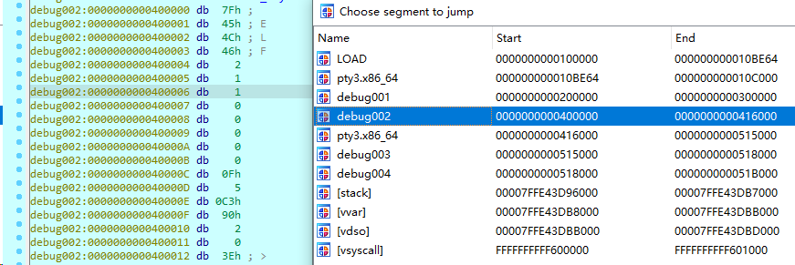
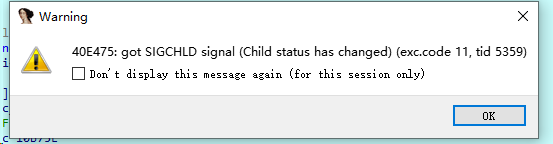

在分析botnet木马的时候，发现了利用魔改upx压缩的样本，因为gdb没有类似于x32dbg那种方便的iat修复功能和内存dump功能，所以esp定律能用也受限。这里使用ida搭配idc脚本的方式进行脱壳，并采用 ida 的finger插件进行函数名称修复。
关键脚本
压缩壳的脱壳思路基本一致，在解压程序将内容完全解压，然后跳转到真正的入口点，把程序dump下来，然后修复一下iat就差不多了。
但是因为这里是一个botnet样本，基本都是系统调用出来的，所以iat修不修无所谓了。
下面这个idc脚本就是用来dump程序，并且修改iat的作用。
#include <idc.idc>
#define PT_LOAD 1
#define PT_DYNAMIC 2
static main(void)
{
auto ImageBase,StartImg,EndImg;
auto e_phoff;
auto e_phnum,p_offset;
auto i,dumpfile;
// 基地址和起始地址，这里根据实际修改，一般不用改
ImageBase=0x400000;
StartImg=0x400000;
EndImg=0x0;
// 检查是不是elf文件
if (Dword(ImageBase)==0x7f454c46 || Dword(ImageBase)==0x464c457f )
{
if(dumpfile=fopen("D:\\dumpfile","wb"))//更改路径
{
// 计算程序头表的偏移和条目数量
e_phoff=ImageBase+Qword(ImageBase+0x20);
Message("e_phoff = 0x%x\n", e_phoff);
e_phnum=Word(ImageBase+0x38);
Message("e_phnum = 0x%x\n", e_phnum);
// 遍历程序头表中的每个条目
for(i=0;i<e_phnum;i++)
{
// 检查程序头条目的类型是否为加载段或动态加载信息段
if (Dword(e_phoff)==PT_LOAD || Dword(e_phoff)==PT_DYNAMIC)
{
// 段在文件中的偏移
p_offset=Qword(e_phoff+0x8);
// 段的起始地址
StartImg=Qword(e_phoff+0x10);
// 段的结束地址
EndImg=StartImg+Qword(e_phoff+0x28);
Message("start = 0x%x, end = 0x%x, offset = 0x%x\n", StartImg, EndImg, p_offset);
// 将段的内容保存到文件
dump(dumpfile,StartImg,EndImg,p_offset);
Message("dump segment %d ok.\n",i);
}
// 更新程序头表的偏移
e_phoff=e_phoff+0x38;
}
// 指向程序头表的偏移位置
fseek(dumpfile,0x3c,0);
fputc(0x00,dumpfile);
fputc(0x00,dumpfile);
fputc(0x00,dumpfile);
fputc(0x00,dumpfile);
// 存储着程序头表中每个条目的大小
fseek(dumpfile,0x28,0);
fputc(0x00,dumpfile);
fputc(0x00,dumpfile);
fputc(0x00,dumpfile);
fputc(0x00,dumpfile);
fputc(0x00,dumpfile);
fputc(0x00,dumpfile);
fputc(0x00,dumpfile);
fputc(0x00,dumpfile);
fclose(dumpfile);
} else Message("dump err.");
}
}
static dump(dumpfile,startimg,endimg,offset)
{
auto i;
auto size;
size=endimg-startimg;
fseek(dumpfile,offset,0);
for ( i=0; i < size; i=i+1 )
fputc(Byte(startimg+i),dumpfile);
}
这个脚本就是从网上拿的，基本都一样。但是这样脱壳出来的程序并不是完美的，节区恢复的很差劲，只能用于基本的分析。
操作过程
操作样本：a3f72a73e146834b43dab8833e0a9cfee6d08843a4c23fdf425295e53517afce
使用ida进行远程调试，在调试到真正的入口点之后运行上述idc脚本就可以了。
start函数下个断点，然后就可以开始运行了，按照思路，单步调试还是寻找大跳转，同时也可以ctrl+s看一下有没有新增节区。
加壳的程序区段：
这里他10b718这里的函数应该就是upx的解密函数了，直接跟进就可以。
往下跟进，根据ida的特性，在解密出新的代码的时候，他不会实时识别成代码段，所以可以将进入红色地址段作为一个新的阶段，比如这里。
这个函数直接跟进去，特点就是第一个红色的call代码。
中间遇见循环直接f4往外跳就行了。因为这个样本是一个魔改的upx壳，只魔改了upx的头部，实际的解压代码改变并不大，所以当遇到upx的经典个小三循环之后，就基本上快到oep了。
走完之后遇到一个跳转，下面的call跟进去，基本就是程序的oep了

程序此时已经出来了新的区块了
然后继续f8跟进，同时观察区块，当发现出现新的区块的时候，基本可以断定是脱壳结束了。
这时候运行脚本，注意修改一下开始地址。就可以得到dump文件了。
技巧
start函数里的call全下好断点，没脱壳的时候ida显示的几个函数在retn也下好断点，经历上面的三个小循环之后直接f8往下跑，会再回到start函数，大概第二次跳回start函数，可以看到真正的区段了。但是区段是空的。
再两次就会发现新的elf出现在这个区段了

大概再有一次就到了入口点了：
多余的区段也被去除了这时。
ida在出现新的区段的时候会自己停住，也可以直接f9往下跑，当ida弹窗显示

ok之后会显示新的弹窗：
点yes之后就来到了新的区段，就是oep，这里具体还是要看压缩壳的特性来说。
成果
基本上脱壳成功了就算
main函数啥的都算是清楚
也可以正常运行
但是区段发生了明显的变化，并不是一个完整的elf，但是能运行，好神奇